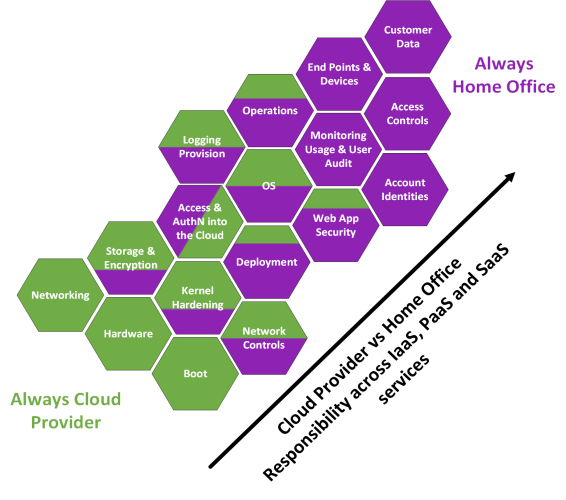
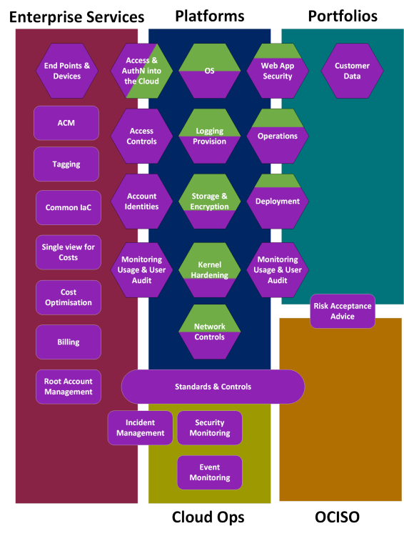

Cloud responsibility model
Cloud responsibility model
What is the cloud responsibility model?
Cloud Security is fundamentally based on what the major public cloud providers term as shared responsibility model (SRM) between customers and the cloud provider. All organisations using the cloud sign up to this model. The SRM defines who is responsible for what on the cloud. The model broadly divides responsibilities into "of" and "in". The Home Office has responsibility for the security in the cloud, this covers how we use the cloud. While the cloud provider has responsibility for the security of the cloud. The details of this model depend significantly on the type of service that you are using in the cloud, for example the Home Office has less responsibility over an Azure Function (the equivalent of AWS lambda) which is serverless compared to an AWS EC2 where everything accept the physical hardware, boot and storage is our responsibility.
Cloud Services
Cloud services can be generally split between Infrastructure, Platform or Software as a service.
- Infrastructure as a Service (IaaS) are services provided within the cloud means that the Home Office operates the infrastructure but do not control the physical infrastructure.
- Platform as a Service or Container Services (PaaS/CS) (Azure/AWS) are cloud provided services where the customer has fewer responsibilities to secure the service and AWS/Azure have greater responsibility for keeping services up to date. Cloud providers are responsible for the platform and application management as well as the security of the operating systems and networks (except for Firewall configuration, i.e. security groups which can be configured by the customer to lock down access to the service).
- Software as a Service or Abstract Services (SaaS/AS) (Azure/AWS) are cloud provided services where the customer has the fewest responsibilities to secure the service. The cloud provider is responsible for the security of network, platform, OS and infrastructure. The Home Office are responsible for managing who has access to the data and that we are using the encryption services. These responsibilities are split over several Home Office teams.
The functions within the model can be broken down to the following:
| Area of Responsibility | SaaS/AS | PaaS/CS | IaaS | Definition |
|---|---|---|---|---|
| Customer Data | HO | HO | HO | This is any data that the Home Office stores within AWS, i.e. an Immigration application, advanced passenger information. Under the Model this always remains the responsibility of the Home Office. The security of this data in the cloud is the responsibility of the portfolio using the cloud, however, other teams such as CSOC, platforms, public cloud, networks & infrastructure can assist by supporting security controls that allow more effective discharge of these responsibilities to mitigate the risks. |
| End-points & Devices | HO | HO | HO | These are equipment that the Home Office uses or are used by our customers to connect to Home Office services in the cloud. The security of these remain the responsibility of the Device Owner (i.e. EUC&C within DDAT ES, Supplier when using Supplier BYOCD or an individual in the case of our customers). It is the responsibility of the portfolio to ensure that their risk owners are content with any risks related to end points and devices. |
| Account Identities | HO | HO | HO | This is the identity used by HO users to access the public cloud. This is the responsibility of the public cloud team to manage on behalf of the Home Office. |
| Access Controls | HO | HO | HO | These include policies, roles and permissions. The HO organisational wide Access Controls are the responsibility of the public cloud team to implement, managing risk on behalf of the risk owners (and will be set with conversations with portfolios and OCISO). Portfolios (account owners) retain responsibility of access controls for any specific roles they create within their accounts. |
| Monitoring Usage and User Audit | HO | HO | HO | This includes system and protective monitoring of what services HO uses and an audit of which users have access to services. The responsibilities here sit across portfolios, CSOC and the public cloud team who can enable policies within the organisation to make this more straightforward. The business owner within the portfolio is responsible for how services are used. |
| Web Application Security | HO/CP | HO | HO | A broad term for the security posture of any web application deployed onto the public cloud. Responsibilities for web application security lie with the Home Office, with the exception of container services. |
| Deployment | HO/CP | HO | HO | The deployment of services used by HO in the cloud is generally the responsibility of individuals platforms and portfolios as this relates to their deployment of cloud services, and there are a range of deployment methodologies and tools in place within HO. The Public Cloud Team are responsible for the deployment of new accounts and new users. The Cloud provider is responsible for the deployment of most functionality in SaaS and particularly serverless use case. |
| Operations | CP | HO | HO | The operations of services used by the Home Office in the cloud, this is generally the responsibility of the platforms that use these services. |
| Access and Authentication into the Cloud | HO/CP | HO/CP | HO/CP | The identity service provided by the Cloud Provider, which is used to gain access and authenticate into the cloud and the cloud provider retains control over this identity service. The HO is responsible for use of this, through Account Identities and Access Controls above. |
| Network Controls | CP | HO/CP | HO | Network controls such as firewalls, load balancers, DMZ, segregation securing access, monitoring etc. are the responsibility of the Home Office when running IaaS (e.g. EC2) and are the responsibility of platforms, networks & infrastructure and portfolios to undertake (the split in responsibility depends on the model within the accounts). The PCT can assist by implementing technically enforced policies and guidelines that prevent the network controls being too open, these will be defined in conversation with portfolios, OCISO and CSOC. Within the SaaS model the cloud provider retains responsibility of these controls - however, from an assurance perspective the Home Office should be appraised of what these controls are. |
| Operating System | CP | HO/CP | HO | Within SaaS tools this remains the responsibility of the cloud provider, who will patch and keep these up to date. Within most PaaS this is also true, however, within IaaS it is the responsibility of the Home Office to manage the OS and keep these up-to-date. This is the responsibility of the portfolio/platform to undertake this. On AWS this can be done using AMIs and the public cloud team can support this with technically enforced policies, monitoring and guidelines that can alert or prevent deployment of vulnerable OS. |
| Logging Provision | CP | HO/CP | HO | Cloud providers have several tools in place to assist with logging and the provision of logs for SaaS and PaaS is primarily the responsibility of the cloud provider, with the Home Office taking responsibility to ensure that these have been turned on and configured. The PCT may provide guidance and technical enforcement of logging across the estate through policies, but these will be agreed between portfolios, platforms, OCISO and CSOC. Note even in IaaS the Home Office can hook AWS logs generated on the infrastructure, i.e. VPC flow logs, API calls into CloudTrail, but other logs remain the responsibility of the portfolio or platform running the IaaS to provision and ensure these are protected. |
| Storage & Encryption | CP | CP | HO | The physical data storage always remains the responsibility of the cloud provider. The encryption and configuration of databases on top is the responsibility of the Home Office portfolios and platforms that are using the cloud services. They can specify what encryption is in place and policies around data storage. There is an exception when using a SaaS service where the cloud provider manages the encryption and configuration of database also. |
| Networking | CP | CP | CP | The physical networking within and out of a data centre is the responsibility of the cloud provider. |
| Kernel Hardening | CP | CP | HO | Kernel hardening is a kernel configuration that mitigates any vulnerabilities or bugs within the kernel to prevent cyber security attacks. Where the Home Office deploys its own OS and devices it is the responsibility of HO to manage this and this would set with Portfolios and Platforms to do. Otherwise, this remains the responsibility of the cloud provider. |
| Boot | CP | CP | CP | This is part of the physical infrastructure of the data centre and is always the responsibility of the cloud provider. |
| Hardware | CP | CP | CP | The physical infrastructure within the data centre is always the responsibility of the cloud provider. The Home Office must ensure in line with the SPF that they are content with the physical security of any supplier they use, which can be demonstrated through physical security reviews/audits often conducted by third party consultancies under the SOC 2 reports. The provider is also responsible for the virtualisation. |
Cloud Providers and Home Office Responsibility Model
The responsibility model split between the Cloud Provider and the Home Office is shown in the diagram below. This has been genericised across the IaaS/PaaS/SaaS type services, where the more purple equals more responsibility that the Home Office takes over the service (i.e. for a Operations HO would have responsibilities for IaaS and PaaS components but the Cloud Provider would have the same for SaaS).
What does this mean in practice to the Home Office, and where do the responsibilities sit within the Home Office organisation structure?
The answer depends on where in Digital, Data and Technology the AWS account sits. Under the model, the Home Office has adopted this aligns to the division of the Home Office AWS estate into three Organizations (BICS-EBSA, Policing and Central). Note that the Public Cloud Team will remain responsible for billing across all accounts, although we will not retain root account responsibilities for Policing. This has an impact on cyber security risk management and where controls are put in place across the organisation.
Home Office Responsibility Matrix
| Area of Responsibility | ACP | EBSA | Policing | HMPO | Wider HO |
|---|---|---|---|---|---|
| Customer Data | Portfolio | Portfolio | Policing | Portfolio | |
| Billing | PCT | PCT | Policing | PCT | |
| End-points & Devices | EUC&C + Suppliers | EUC&C + Suppliers | Policing | EUC&C + Suppliers | |
| Account Identities | PCT | EBSA + PCT | Policing | PCT | |
| Access Controls | ACP + PCT | EBSA | Policing | Portfolio + PCT | |
| Monitoring Usage and User Audit | ACP + Portfolio | EBSA | Policing | Portfolio + PCT | |
| Web Application Security | ACP + Portfolio | EBSA + Portfolio | Policing | Portfolio + Platform | |
| Deployment | ACP | EBSA | Policing | Portfolio + Platform | |
| Operations | ACP | EBSA | Policing | Portfolio + Platform | |
| Access and Authentication into the Cloud | PCT | EBSA | Policing | PCT | |
| Network Controls | ACP | EBSA | Policing | Platform | |
| Operating System | ACP | EBSA | Policing | Platform | |
| Logging Provision | ACP | EBSA | Policing | Platform | |
| Storage & Encryption | ACP | EBSA | Policing | Platform | |
| Kernel Hardening | ACP | EBSA | Policing | Variable |
The responsibility matrix can also be expanded to other areas of processes and standards across the HO organisation and diagram below shows a generic responsibility model across Central teams (i.e. Enterprise Services teams), Platforms (i.e. EBSA, ACP, LECP), Portfolios (i.e. BICS, PPPT) and HO capabilities such as CSOC/ITOC and OCISO. It is noted that individual areas will have a slightly different split of responsibilities and this should be outlined within security and service wrappers.
What does the above mean for my project?
That depends on what service type you are using and where in the Home Office your project is. If you are using IaaS, i.e. you are running and managing your own EC2 instances to do something on your application, you will be responsible for significantly more security controls than if you are using a HO Platform such as EBSA or ACP. The key thing to remember is that although your project may not be directly responsible for the configuration and provision of cloud services you use from a data protection and cyber security perspective your Senior Responsible Owner will be taking risks that are mitigated by actions of other teams.
The Public Cloud Team is available to help with any questions and queries email: public.cloud@homeoffice.gov.uk